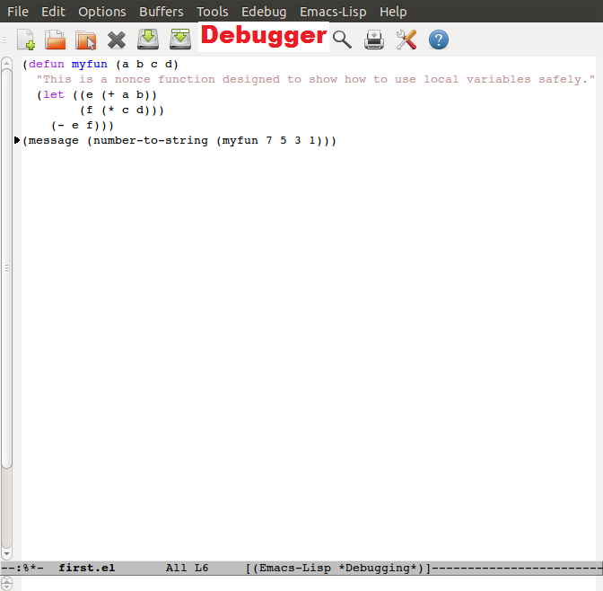

Lesson 4-1 - Writing Elisp In Emacs¶
Introduction¶
Emacs as an editor provides a host of specific tools to help software developers in a wide range of languages. Not surprisingly the support for the Elisp language in Emacs is very good.
This lesson will explore Emacs as an editor for Elisp.
Emacs switches into a special mode for a particular programming language by looking at the extension on the filename - the extension for Elisp is .el. If you create a file called something.el and open it with Emacs you will see that the editor has changed itself.
The modeline now contains the expression (Emacs-Lisp) which indicates that it is in the Emacs Lisp Major Mode. The menu bar now has an Emacs-Lisp menu.
A new menu has appeared. Let’s look at some of the commands on it. There are indenting commands that can be used to pretty up the source code and lay it out consistently. (Indent Line uses the [Tab] key to indent a line. Regions commands can be used on regions - blocks of code which have been selected by marking their starts with [Control][Space] and the moving the cursor point.
There are menu commands for evaluating expressions and the contents of the buffer as well as various profiling and tracing tools.
If you execute expressions now, the operator message will now output to the minibuffer at the bottom of Emacs.
One of the most important features in the debugger - which is triggered when you instrument a function for debugging using the menu command Instrument Functions for Debugger.
Detailed instructions on using the Emacs debugger can be found in the Emacs Manual
Load an Elisp file, and execute it under the debugger. The diagram below shows it working. You can step through the code line-by-line. The debugger shows the values of the last expression executed in the minibuffer at the bottom. In the picture the last expression executed is a (as shown by the debugger cursor which is placed after it) - its current value (7) is shown in the minibuffer.
Read the manual section and try out the debugger until you have mastered it - it will be necessary to use it to develop more complex functionality.
What You Have Learned¶
This lesson has covered the operations of the Emacs debugger Edebug.
Extra Activities¶
Run the menu item Check Document Strings in the Emacs-Lisp menu - can you work out what does the operator provide does?